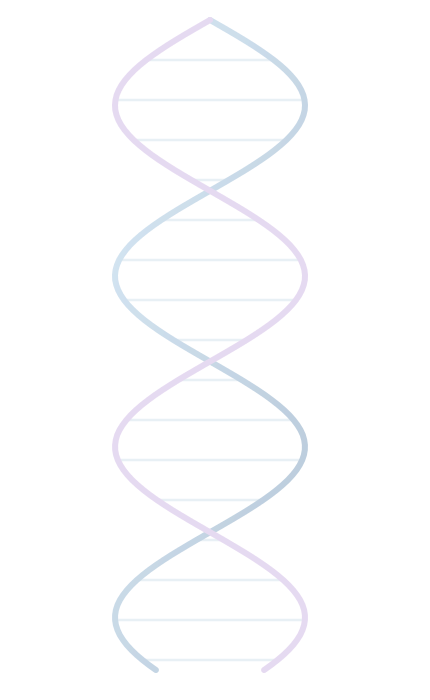

La investigación de insulina
Los avances sobre hormonas peptídicas transformaron el estudio de la regulación metabólica.
Un espacio para explorar la historia y los mecanismos de los péptidos, distinguir investigación de tratamiento y conocer las publicaciones que están ampliando el debate científico.



Un péptido es una cadena de aminoácidos unidos por enlaces peptídicos. Algunas de estas moléculas cumplen funciones de señalización biológica, pero su composición y su contexto determinan qué puede concluirse sobre su actividad.
En investigación es esencial distinguir una observación celular, un hallazgo en animales y los resultados de un ensayo clínico en personas. Ninguno puede reemplazar por sí solo una evaluación sanitaria.
Cuatro etapas para entender cómo evolucionó la investigación sobre hormonas, péptidos y metabolismo.
Los avances sobre hormonas peptídicas transformaron el estudio de la regulación metabólica.
Los métodos de análisis permitieron caracterizar moléculas y entender sus interacciones.
El estudio de hormonas intestinales amplió el conocimiento sobre metabolismo y glucosa.
Los ensayos exploran nuevas combinaciones de receptores, siempre bajo evaluación científica y regulatoria.
Una introducción a varias moléculas y mecanismos frecuentemente mencionados en la literatura sobre péptidos.
El péptido similar al glucagón tipo 1 participa en la respuesta fisiológica tras las comidas. Su receptor es objeto de investigación farmacológica. Estudiar su mecanismo no equivale a recomendar una sustancia o dosis.
Se estudian mecanismos celulares y vías biológicas para formular hipótesis.
Experimentos de laboratorio y modelos adecuados, con límites para extrapolar a personas.
Ensayos clínicos que comienzan a evaluar seguridad y aspectos fundamentales.
Estudios más grandes, con protocolos y comparadores para evaluar resultados y riesgos.
Las autoridades analizan calidad, eficacia y seguridad antes de eventuales autorizaciones.
El orden y alcance de etapas depende del programa de desarrollo. La publicación de resultados no equivale por sí sola a autorización sanitaria.
Selección editorial verificada al 16 de noviembre de 2026. No es un feed automático ni sustituye las fuentes originales.